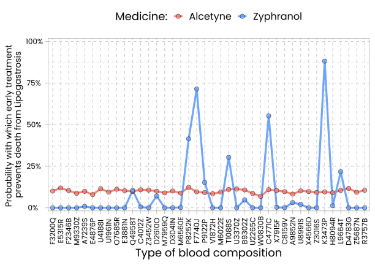

Pilot of Experiment 1
1 Summary
The goal of this pilot study was to pre-test the materials. As in the main experiment (Exp. 1), the main manipulations were the decision level (personal action decision vs. normative action evaluation) and the overall causal strength level (mean strength of the causes: 0.90 vs. 0.10). A difference from the main experiment in the pilot study was that subjects were asked to provide preference ratings separately for each of the two presented causes, i.e., they provided ratings on two sliders, one for each cause. The endpoints of these sliders were labeled “I fully disagree” and “I fully agree”. In that pilot study, the “strength = 0.10” condition was run first and the “strength = 0.90” condition second. Another difference from the main experiment was that subjects in the end were asked to shortly explain their preference ratings. These text responses were used to gain an impression of whether subjects’ ratings are actually driven by considerations of fairness and equity and by a risk seeking tendency in the personal action decision condition with low overall causal strength. A print version of the online study is provided below.
1.1 Method
1.1.1 Participants
Three hundred and one subjects (119 male, 179 female, 3 non-binary; age range = 18 to 80 years, \(M_{age}~= 37.50\) years, \(SD_{age}~= 13.62\) years) participated in the condition in which the overall strength of the causes was 0.10. One hundred and twenty subjects (40 male, 79 female, 1 non-binary; age range = 18 to 92 years, \(M_{age}~= 39.45\) years, \(SD_{age}~= 15.60\) years) participated in the condition in which the overall strength of the causes was 0.90. As in the main study, subjects were recruited via the online participant pool Prolific (). The inclusion criteria were a minimum age of 18 years, English as native language, ``secondary school’’ as the minimum level of completed education, and a 90 percent approval rate of subjects’ participation in previous studies.
1.1.2 Stimuli
The graphs that subjects were shown were the same as in the main experiment.
1.1.3 Procedure
The procedure was largely identical to the one of the main study. A difference was that the pilot study was conducted via the online survey tool “Unipark, Questback”, while the main study was programmed in JsPSych and run via “Cognition.run”. The pilot study thus had a slightly different layout. A demo video of the procedure is provided below.
1.1.4 Results
Subjects mean ratings are shown in the Figure below. The Analysis script is linked below. As can be seen in the figure, the pilot study found the same interaction pattern that was found in the main study: Subjects preferred the stable cause, but the unstable cause became more attractive in the personal action decision condition in which the causes were weak (strength = 0.10).
The results of a cluster analysis are shown in the figure below. Subjects were clustered based on the difference between their two ratings. The analysis code of the cluster analysis is provided in the analysis script linked below. As can be seen in the figure, the pilot study yielded a very similar pattern as the main study.

2 Stimuli

The stimuli were the same as in the main study.
Download stimuli [ZIP-Folder containing stimuli in PNG format]
The R-Code used to construct the stimuli graphs can be downloaded here.
3 Print Version of pilot study
- A print version of the condition in which the caussal strength was 0.10 can be downloaded as a pdf file here.
- A print version of the condition in which the caussal strength was 0.90 can be downloaded as a pdf file here.
4 Data
- Download Experimental data (Strength = 0.10) [.txt-file; delimiter = tab]
- Download Experimental data (Strength = 0.90) [.txt-file; delimiter = tab]
4.1 Data set information
The data set contains the following columns:
- sID: a subject ID
- Condition: a condition variable
- Strength: factor coding the causal strength condition
- Level: factor coding the decision level condition
- Unstable_label: counterbalancing factor coding the name of the unstable cause
- Unstable_col: counterbalancing factor coding the color of the unsable cause
- rating_stable: DV: preference rating for the stable cause
- rating_unstable: DV: preference rating for the unstable cause
- Desktop_Confirmation: responses to a check question asking subjects to confirm to take part via PC or laptop
- Attention_Confirmation: responses to a check question asking subjects to indicate that they are willing to pay attention
- Age: subjects’ age (in years)
- Sex: 1 = male, 2 = female, 3 = non-binary, 4 = don’t want to say
- Justification: Subjects’ explanations of their ratings
- Efficacy_check: responses to a learning check question asking for the strengths of the causes
- Variability_check: responses to a learning check question asking for the variability of the causes
- Technical_issues: subjects’ report of any technical issues they might have experienced
- Duration (sek): The time it took subjects to finish the study (in seconds)
- scenario_check: Cods if subjects correctly responded to the check questions
5 Analysis Scripts
5.1 Condition: causal strength = 0.10
- View R-Markdown code
- Download R-Markdown code
- View knitted/ compiled R-Markdown (web view of analysis)
5.2 Condition: causal strength = 0.90
- View R-Markdown code
- Download R-Markdown code
- View knitted/ compiled R-Markdown (web view of analysis)